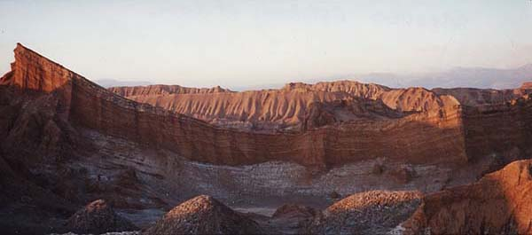
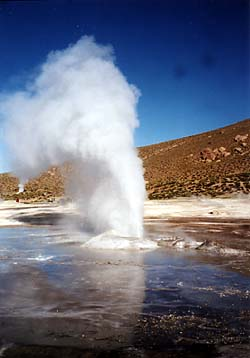
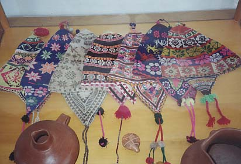
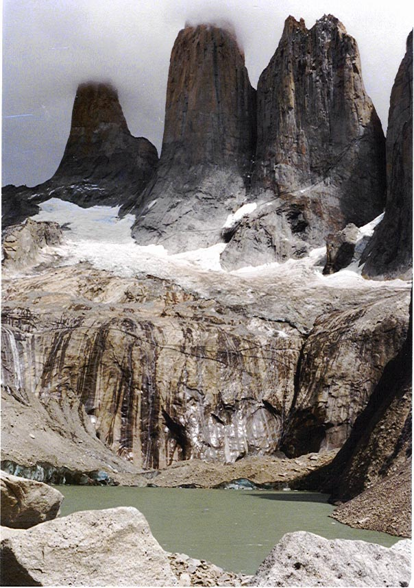
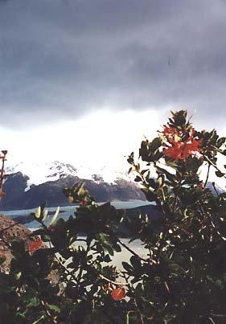
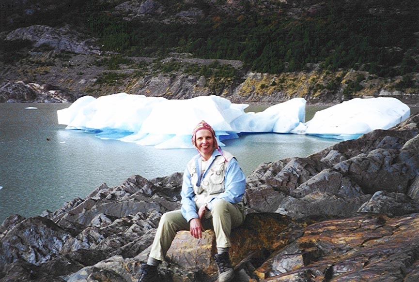

They say that dogs resemble their owners in appearance. Is it possible that a country’s geographic contours resemble their name? A point in case is the South American country, Chile, whose long skinny shape does resemble that of an Anaheim chile pepper. Regardless of its shape, Chile has an ideal geographic setting, the Andes Mountain range practically touches the Pacific Ocean. No destination in Chile is more than two hours from the ocean or the mountains.

Compared to Buenos Aires or Rio de Janeiro, Santiago is considered a country maid, but this capitol city embodies the entire nation’s simple charm. While conscious of the pervasive presence of U.S. culture, Chile has managed to maintain its own identity. Yet somehow Chile seems to be more closely linked with its Northern European heritage than with its Latin/Hispanic roots. Under the influence of its European settlers, Chile’s colonization lead to the extermination of its native peoples. These indigenous hunter/gatherers lived off the abundance of the land, but as a society they never created the complex civilizations of the Maya, Aztecs or the Inca. To this day few descendants of these native people remain in Chile.
Not unlike the United States, Chile’s remarkable diverse landscape is its treasure as well as its rich variety of flora and fauna. To the North, the contrast of the Atacama’s Altiplano (high altitude desert) to Torres del Paine’s spiring peaks in the South is unrivaled. The hiking, climbing and white water rafting await the active traveler. Chile’s pristine rivers, lakes and streams are a fly angler’s paradise. For the less active, the vineyards, the sampling of seafood and fresh produce, the natural thermal pools, the local artisan and food markets delight even the most sophisticated traveler. Above all, the Chilean people’s warmth and hospitality is as refreshing as its bracing landscape.
|

Tatio Geyser, San Pedro de Atacama |

Colorful hand-woven hats and local pottery |
|

The "Supernatural" Towers of Torres del Paine |

Lago Grey Glacier Hike |

Nancy Pole-Wilhite, your adventure guide, on a Lago Grey Glacier Hike